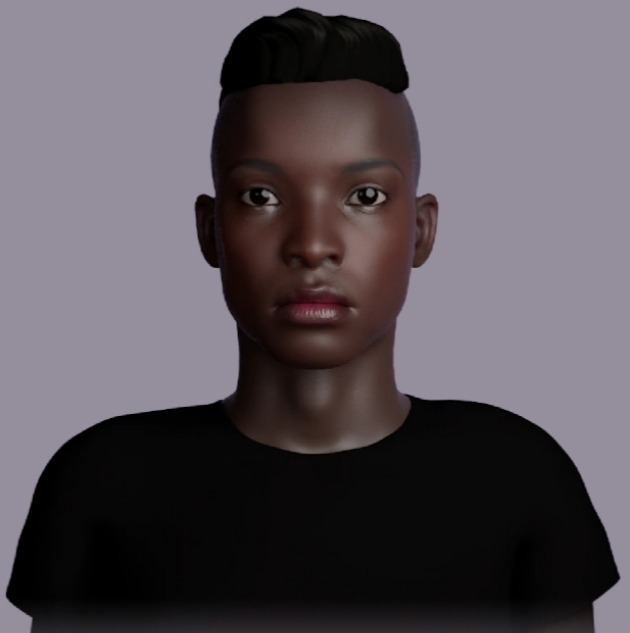

Miss Keith holds a Montessori Diploma and joined Little Stars in 2010. Miss Kay believes passionately in supporting children and parents.
Miss Henry holds a BA Hons degree in Geography and joined Young England in 2013 as School Business Manager and works across admissions, HR and marketing.
Mr Cappell from Studio Cultivate teaches the children to explore the wondrous natural processes that create and sustain the world in which we live.
Coach Matt from Playball introduces children to constructive and enjoyable sport participation through various age-appropriate programmes.
Prior to joining Little Stars in April 2019, Miss Evans spent six years teaching in two nursery schools. She is a Group Teacher for the morning and afternoon sessions and our SENDCO (accredited).